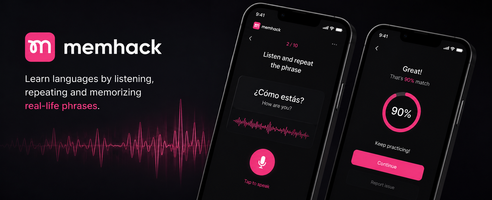

Fluency Academy
MemHack
Language Learning App
Dialogue audio production for a language-learning app designed around real-life phrases, repetition and pronunciation practice.

The Product
MemHack is a language-learning app designed to help students improve their speaking through real-life dialogues, repetition and pronunciation practice. Learners listen to phrases, repeat them aloud and use the experience to build confidence and natural delivery.
Listen
Hear natural dialogues and useful phrases.
Repeat
Practice speaking by repeating phrases aloud.
Improve
Build confidence through repeated listening and pronunciation practice.
My Contribution
I contributed to the dialogue audio production for English, Spanish and German content. These recordings were created to serve as clear, natural pronunciation references within the app, so speech quality, consistency and intelligibility were essential.
Voice Recording
Produced and coordinated voice recordings for dialogues and phrases.
Dialogue Editing
Cleaned and edited dialogue while preserving natural speech.
Multilingual Production
Worked across English, Spanish and German content.
Speech Quality
Focused on pronunciation, intelligibility, consistency and minimal audible artefacts.
Audio Approach
Because learners rely on the recordings as pronunciation references, clarity and natural delivery were the priority. The production focused on clean recordings, careful editing and consistent vocal quality across languages, while avoiding processing that could make the speech feel unnatural.
Clean & Natural
Removed noise and unwanted artefacts while preserving natural speech.
Consistent Delivery
Maintained a consistent vocal tone, level and pacing across content.
Pronunciation Clarity
Ensured phrases remained easy to understand and repeat.
Learner First
Audio decisions were made around clarity, confidence and language learning.